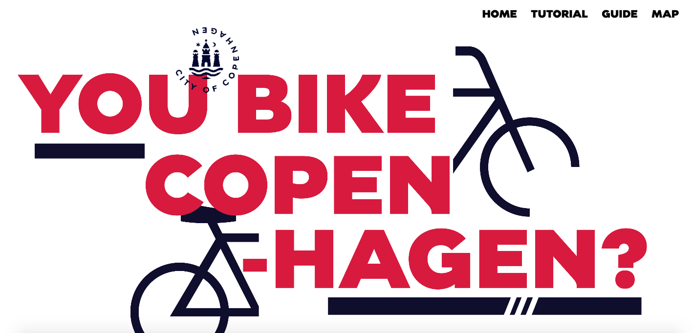
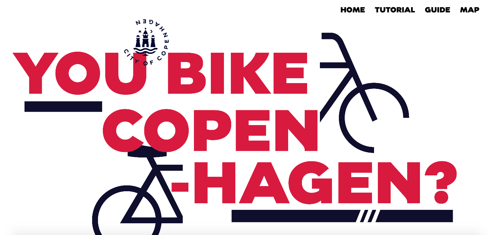

03 Basic content
In theme Basic content we could put our hands on film making, production and postproduction. We got a chance to work with Adobe Premiere Pro for the first time.
For the group project we got for the first time a case. We had to stick to a given style guide which was some times very helpful but it was also tricky.
We could experience obstacles concerning video / film production. The weather conditions were not on our side during shooting. We also had to do a colour-correction because of the constant changes of a light.
 
